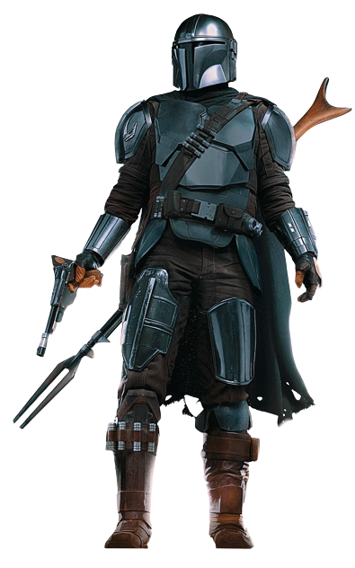
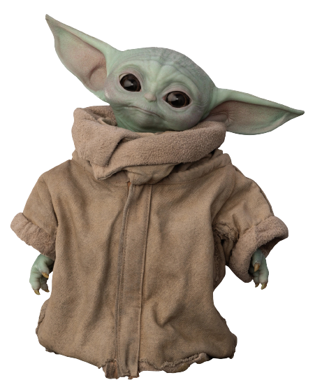
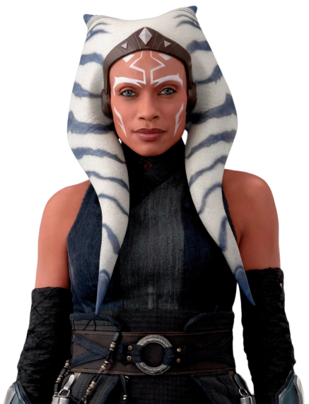
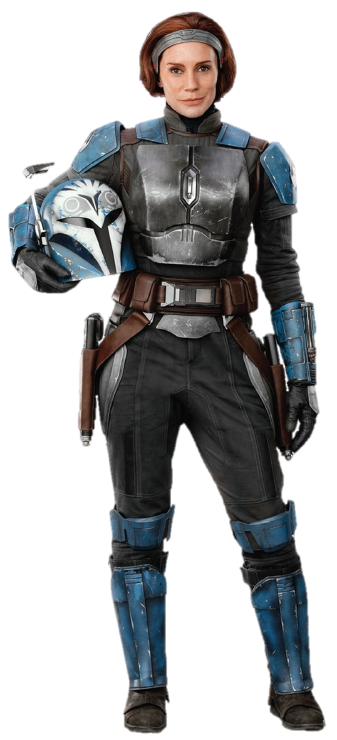
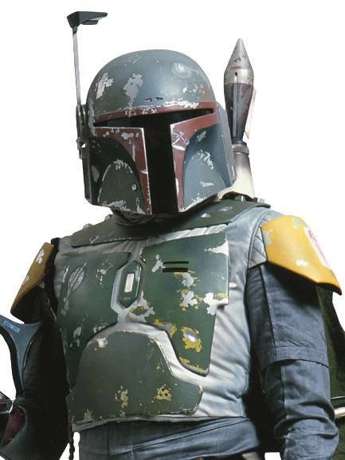

Personnages Principaux
Mando

Din Djarin était un chasseur de primes mandalorien aguerri portant une armure en beskar qui sévit durant les premières années de la Nouvelle République. Souvent appelé "Mandalorien" ou simplement "Mando", il était un guerrier talentueux, mais pas infaillible...
Grogu
Din Grogu, également appelé Grogu, l'Enfant, l'Objectif, l'Orphelin, ou encore la Proie, était un Initié de l'Ordre Jedi issu de la même espèce que le Grand Maître Yoda. Élevé sous la République, il survécut à la Grande Purge Jedi et dut se cacher du terrible Empire Galactique. Des décennies plus tard, il entra sous la garde...
Ahsoka
Ahsoka Tano est un personnage de Star Wars. Originaire de la planète Shili, elle est amenée dès l'enfance sur Coruscant afin d'être formée en tant que Jedi. Au début de la Guerre des clones, Ahsoka devient l'apprentie d'Anakin Skywalker et participe à...
Bo-Katan Kryze
Bo-Katan Kryze était une humaine Mandalorienne qui vécut sous la République Galactique, l'Empire Galactique et plus tard la Nouvelle République. Au cours de ces longues décennies...
Boba Fett
Boba Fett est le clone de Jango Fett qu'il a conservé auprès de lui comme son fils, parmi les milliers d'autres clones réalisés à son image sur la planète Kamino et qui vont intervenir dans l'épisode II de la saga Star Wars, l'Attaque des clones. Devenu adulte, Boba est un redoutable chasseur de primes, connu pour...